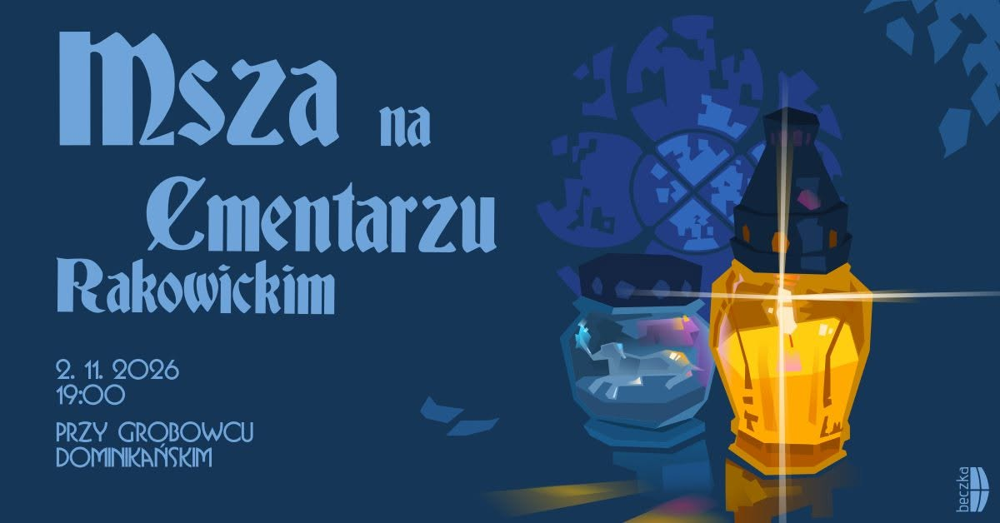
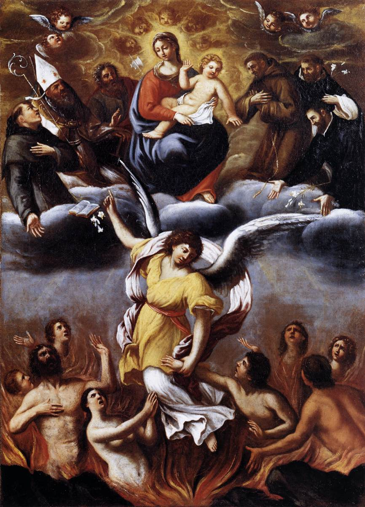
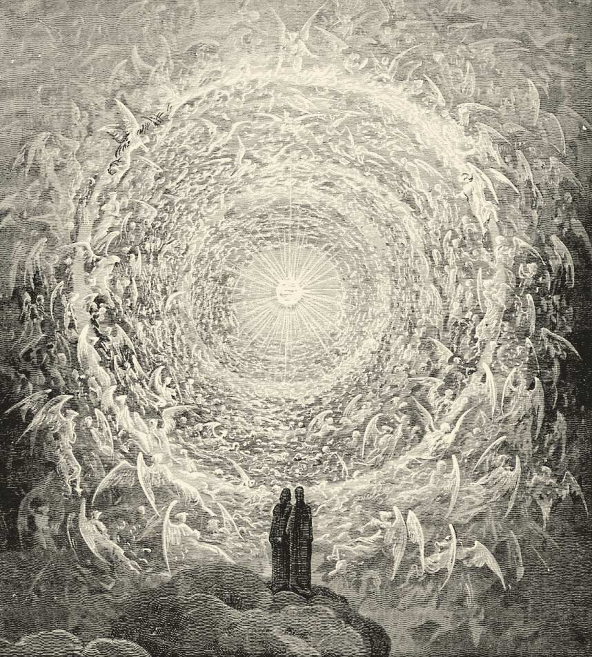

Msza święta na Cmentarzu Rakowickim Holy Mass at Rakowicki Cemetery
Tradycyjna uroczysta Msza św. Duszpasterstwa Akademickiego „Beczka” sprawowana przy grobowcu dominikańskim, gdzie spoczywa m.in. o. Joachim Badeni OP. The traditional solemn Mass of the “Beczka” Academic Ministry, celebrated at the Dominican tomb, where Fr. Joachim Badeni OP is buried, among others. Nawigacja Google Maps Google Maps directions

Brak profesorów spełniających podane kryteria. No professors matched your search criteria.
Zarząd Cmentarzy Komunalnych udostępnia dokładną mapę z podziałem na kwatery, rzędy i numery mogił na Cmentarzu Rakowickim. The Krakow Municipal Cemetery Board provides an exact official locator with sectors, rows, and grave numbers.
Przewodnik studencki: modlitwa za zmarłych i Dzień ZadusznyStudent guide: prayers for the faithful departed and All Souls' Day
Zwięzły przewodnik o tym, jak skutecznie i pobożnie pomagać duszom w czyśćcu, szczególnie w okresie Wszystkich Świętych i Dnia Zadusznego (1–2 listopada oraz przez cały listopad).A concise guide to helping the souls in purgatory effectively and devoutly, especially around All Saints' Day and All Souls' Day (1–2 November and throughout the whole month of November).

Dusze czyśćcowe i orędownictwo MaryiThe souls in purgatory and the intercession of Mary
Lodovico Carracci, Anioł uwalniający dusze z czyśćca. Modlitwa Kościoła pielgrzymującego na ziemi otwiera bramy światłości duszom oczekującym na pełnię chwały Bożej.Lodovico Carracci, An Angel Frees the Souls of Purgatory. The prayer of the Church on pilgrimage on earth opens the gates of light to the souls awaiting the fullness of God's glory.

Mistyczna Róża ZbawionychThe Mystic Rose of the Saved
Gustave Doré, Raj (Pieśń XXXI). Cel drogi każdej duszy: wieczna kontemplacja Oblicza Bożego w jedności ze wszystkimi świętymi i aniołami.Gustave Doré, Paradiso (Canto XXXI). The goal of every soul's journey: eternal contemplation of the face of God in union with all the saints and angels.
Msze święte u Dominikanów na Cmentarzu Rakowickim (2 listopada)Dominican All Souls' Day Masses at Rakowicki Cemetery (2 November)
Dzień Zaduszny • Wspomnienie Wszystkich Wiernych ZmarłychAll Souls' Day • Commemoration of All the Faithful DepartedW Dzień Zaduszny (2 listopada) ojcowie i bracia dominikanie z krakowskiego klasztoru tradycyjnie sprawują Msze święte przy swoim zabytkowym grobowcu zakonnym na Cmentarzu Rakowickim:On All Souls' Day (2 November) the Dominican fathers and brothers of the Kraków priory traditionally celebrate Holy Mass at their historic religious tomb in Rakowicki Cemetery:
- • godz. 9:30 — Msza św. koncelebrowana przez wspólnotę braci dominikanów.9:30 — Holy Mass concelebrated by the community of Dominican brothers.
- • godz. 19:00 — uroczysta Msza święta akademicka (Duszpasterstwo Akademickie „Beczka”) przy grobowcu dominikańskim.19:00 — solemn academic Holy Mass (“Beczka” Academic Ministry) at the Dominican tomb.
Kwatera VIII (starsza, historyczna część cmentarza, w pasie zabytkowym, w bezpośrednim sąsiedztwie grobowca Jana Matejki, niedaleko cmentarnej Kaplicy Zmartwychwstania Pańskiego).Sector VIII (the older, historic part of the cemetery, in the heritage zone, right next to Jan Matejko's tomb, not far from the cemetery Chapel of the Resurrection of the Lord).
W grobowcu tym spoczywają m.in. znany duszpasterz o. Joachim Badeni OP oraz wielu wybitnych zakonników i wychowawców krakowskich pokoleń.Buried in this tomb are, among others, the renowned pastor Fr. Joachim Badeni OP and many distinguished friars and educators of Kraków's generations.
Cytaty świętych o czyśćcu, różańcu i pomocy zmarłymWords of saints on purgatory, the rosary and helping the departed
Święte dusze w czyśćcu są bardziej wdzięczne za nasze modlitwy niż święci w niebie. Za jedno Zdrowaś Maryjo ofiarowane w ich intencji możemy uwolnić niejedną duszę. Odmawiajmy różaniec za zmarłych, a oni będą naszymi potężnymi orędownikami u tronu Bożego.The holy souls in purgatory are more grateful for our prayers than the saints in heaven. For a single Hail Mary offered for them we can free more than one soul. Let us pray the rosary for the dead, and they will be our powerful intercessors before the throne of God.
Zapytałam tych dusz, jakie jest ich największe cierpienie? Odpowiedziały mi jednoznacznie, że największym dla nich cierpieniem jest tęsknota za Bogiem. Te dusze modlą się bardzo gorąco, ale bez skutku dla siebie, tylko my możemy wejść im z pomocą.I asked these souls what their greatest suffering was. They answered me unanimously that their greatest suffering is longing for God. These souls pray most fervently, but with no effect for themselves; only we can come to their aid.
Spotkanie z Bogiem wymaga absolutnej czystości. Każdy ślad przywiązania do zła musi zostać wyeliminowany, wszelkie zniekształcenie duszy naprawione. Oczyszczenie jest darem Bożej miłości, która przygotowuje człowieka do pełnej komunii z Bogiem.Meeting God requires absolute purity. Every trace of attachment to evil must be eliminated, every distortion of the soul corrected. Purification is a gift of God's love, which prepares a person for full communion with God.
Jeśli pragniemy nieść natychmiastową i największą ulgę duszom w czyśćcu cierpiącym, ofiarujmy za nie różaniec święty. Matka Boża zstępuje do czyśćca, aby pocieszyć i wybawić swoje dzieci wzywające Jej opieki.If we wish to bring immediate and the greatest relief to the suffering souls in purgatory, let us offer the holy rosary for them. Our Lady descends into purgatory to console and deliver her children who call upon her protection.
Nie wahajmy się nieść pomocy tym, którzy odeszli, i ofiarujmy za nich nasze modlitwy. Łzy nie pomagają zmarłym, ale modlitwa, Msza święta i jałmużna przynoszą im ulgę.Let us not hesitate to help those who have departed, and let us offer our prayers for them. Tears do not help the dead, but prayer, Holy Mass and almsgiving bring them relief.
Czyściec to miejsce, gdzie spłacamy długi naszej miłości. Różaniec ofiarowany za zmarłych jest kluczem do bram niebieskich, a pomagając duszom czyśćcowym, zyskujemy wiernych przyjaciół w niebie.Purgatory is the place where we repay the debts of our love. A rosary offered for the dead is a key to the gates of heaven, and by helping the souls in purgatory we gain faithful friends in heaven.
Czyściec według nauki ks. dr. Carlosa MartinsaPurgatory according to the teaching of Fr. Carlos Martins
Stan oczyszczenia, a nie fizyczne miejsceA state of purification, not a physical place
W sensie ścisłym czyściec nie jest fizycznym miejscem zlokalizowanym w trójwymiarowej przestrzeni, lecz stanem istnienia, w którym dusza doświadcza oczyszczenia. Ponieważ dusza po śmierci nie ma ciała, nie potrzebuje przestrzeni materialnej.Strictly speaking, purgatory is not a physical place located in three-dimensional space, but a state of existence in which the soul undergoes purification. Since after death the soul has no body, it does not need material space.
Przebaczenie win a spłata długuForgiveness of guilt and repayment of the debt
Spowiedź święta uwalnia od winy grzechu i kary potępienia. Pozostaje jednak dług sprawiedliwości oraz zranienie natury ludzkiej, które wymaga zadośćuczynienia i uzdrowienia.Holy confession frees us from the guilt of sin and the punishment of damnation. What remains, however, is a debt of justice and a wound in human nature that requires reparation and healing.
Absolutna czystość przed BogiemAbsolute purity before God
Nikt nie może stanąć przed obliczem samego Boga w niebie, mając choćby najmniejszą niedoskonałość. Spotkanie z Bogiem wymaga absolutnej czystości, dlatego każdy ślad przywiązania do zła musi zostać uleczony i wyeliminowany.No one can stand before the face of God himself in heaven with even the slightest imperfection. Meeting God requires absolute purity, which is why every trace of attachment to evil must be healed and eliminated.
Dlaczego powinniśmy dziękować za istnienie czyśćca?Why should we give thanks that purgatory exists?
Ks. Martins przypomina trafne stwierdzenie, że gdyby nie istniał czyściec, niebo musiałoby być zamknięte dla ogromnej większości ludzi, którzy wprawdzie żałowali za grzechy, ale nie zdążyli w pełni zadośćuczynić za swoje wady.Fr. Martins recalls the apt observation that, were there no purgatory, heaven would have to be closed to the vast majority of people who, although they repented of their sins, did not manage to make full reparation for their faults.
Odpust zupełny za zmarłych (1–8 listopada)Plenary indulgence for the departed (1–8 November)
W dniach 1–8 listopada można codziennie uzyskać jeden odpust zupełny (całkowite darowanie kar czyśćcowych) i ofiarować go wyłącznie za dusze w czyśćcu.On 1–8 November it is possible to obtain one plenary indulgence each day (complete remission of the temporal punishment due to sin) and to offer it exclusively for the souls in purgatory.
| WarunekCondition | Wymagane działanieRequired action |
|---|---|
| 1. Czynność pobożna1. Pious act | Nawiedzenie cmentarza i modlitwa za zmarłych (choćby w myśli).Visiting a cemetery and praying for the departed (even mentally). |
| 2. Łaska uświęcająca2. Sanctifying grace | Spowiedź sakramentalna (brak grzechu ciężkiego).Sacramental confession (being free of grave sin). |
| 3. Eucharystia3. The Eucharist | Przyjęcie Komunii Świętej w danym dniu.Receiving Holy Communion on that day. |
| 4. Modlitwa papieska4. Prayer for the Pope's intentions | Modlitwa w intencjach Ojca Świętego (np. Ojcze nasz i Zdrowaś Maryjo).A prayer for the intentions of the Holy Father (e.g. the Our Father and Hail Mary). |
| 5. Wolność od grzechu5. Freedom from sin | Brak jakiegokolwiek przywiązania do grzechu (nawet lekkiego).No attachment to any sin (even venial). |
Modlitwy tradycyjne, Koronka i Litania za zmarłychTraditional prayers, Chaplet and Litany for the dead
Wieczny odpoczynek (akt strzelisty):Eternal rest (ejaculatory prayer):
Wieczny odpoczynek racz im dać, Panie, a światłość wiekuista niechaj im świeci. Niech odpoczywają w pokoju wiecznym. Amen.Eternal rest grant unto them, O Lord, and let perpetual light shine upon them. May they rest in peace. Amen.
Modlitwa św. Gertrudy Wielkiej za dusze czyśćcowe:Prayer of St. Gertrude the Great for the souls in purgatory:
Ojcze Przedwieczny, ofiaruję Ci Najdroższą Krew Boskiego Syna Twego, Pana naszego Jezusa Chrystusa, w połączeniu ze wszystkimi Mszami Świętymi dzisiaj na całym świecie odprawianymi, za wszystkie święte dusze w czyśćcu cierpiące, za grzeszników na całym świecie, za grzeszników w Kościele powszechnym, za tych w moim domu i w mojej rodzinie. Amen.Eternal Father, I offer Thee the Most Precious Blood of Thy Divine Son, Jesus, in union with the Masses said throughout the world today, for all the holy souls in purgatory, for sinners everywhere, for sinners in the universal Church, for those in my own home and within my family. Amen.
Zgodnie z tradycją mistyczną Pan Jezus zapewnił św. Gertrudę, że każdorazowe pobożne odmówienie tej modlitwy uwalnia wiele dusz z czyśćca.According to mystical tradition, the Lord assured St. Gertrude that each devout recitation of this prayer frees many souls from purgatory.
Koronka do Bożego Miłosierdzia:Chaplet of Divine Mercy:
Podyktowana św. Faustynie Kowalskiej przez Jezusa jako potężny oręż wstawienniczy. Sam Zbawiciel prosił: „Módl się nieustannie tę koronkę... Chociażby grzesznik był najzatwardzialszy, jeżeli raz tylko zmówi tę koronkę, dostąpi łaski z nieskończonego miłosierdzia Mojego” (Dz. 687). Ofiarowanie Koronki za zmarłych profesorów to wyjednywanie dla nich zanurzenia w nieskończonych zasługach Męki Chrystusa.Dictated to St. Faustina Kowalska by Jesus as a powerful weapon of intercession. The Saviour himself asked: “Say unceasingly this chaplet... Even the most hardened sinner, if he recites this chaplet only once, will receive grace from My infinite mercy” (Diary 687). Offering the Chaplet for the departed professors means obtaining for them immersion in the infinite merits of Christ's Passion.
Litania za zmarłych (wezwania błagalne):Litany for the dead (petitions):
Modlitwy Kościoła przy śmierci i umieraniu (wg USCCB)Prayers of the Church for death and dying (USCCB)
Krótkie słowa pociechy ze Słowa Bożego:Short words of comfort from Scripture:
„Czy żyjemy, czy umieramy, należymy do Pana.”“Whether we live or die, we are the Lord's.” (Rz 14,8)(Rom 14:8)
„Choćbym chodził ciemną doliną, zła się nie ulęknę, bo Ty jesteś ze mną.”“Though I should walk in the valley of the shadow of death, no evil would I fear, for you are with me.” (Ps 23,4)(Ps 23:4)
„W ręce Twoje powierzam ducha mego.”“Into your hands I commend my spirit.” (Ps 31,6a)(Ps 31:6a)
„Jezu, wspomnij na mnie, gdy przyjdziesz do swego królestwa.”“Jesus, remember me when you come into your kingdom.” (Łk 23,42)(Lk 23:42)
Modlitwa polecenia duszy:Prayer of Commendation:
Wyrusz w drogę z tego świata, duszo chrześcijańska, w imię Boga Ojca wszechmogącego, który cię stworzył, w imię Jezusa Chrystusa, Syna Boga żywego, który za ciebie cierpiał, w imię Ducha Świętego, który został na ciebie wylany. Wyrusz, wierny chrześcijaninie. Obyś już dziś zamieszkał w pokoju, a twoim domem niech będzie Bóg na Syjonie, razem z Maryją, Dziewicą i Bożą Rodzicielką, ze świętym Józefem i wszystkimi aniołami i świętymi.Go forth, Christian soul, from this world in the name of God the almighty Father, who created you, in the name of Jesus Christ, Son of the living God, who suffered for you, in the name of the Holy Spirit, who was poured out upon you, go forth, faithful Christian. May you live in peace this day, may your home be with God in Zion, with Mary, the Virgin Mother of God, with Joseph, and all the Angels and Saints.
Modlitwa za zmarłych:Prayer for the dead:
W Twoje ręce, Panie, pokornie powierzamy naszych braci i siostry. W tym życiu otaczałeś ich swoją czułą miłością; wybaw ich teraz od wszelkiego zła i obdarz wiecznym odpoczynkiem. Dawny porządek przeminął: przyjmij ich do raju, gdzie nie będzie już smutku, płaczu ani bólu, lecz pełnia pokoju i radości z Twoim Synem i Duchem Świętym na wieki wieków. Amen.In your hands, O Lord, we humbly entrust our brothers and sisters. In this life you embraced them with your tender love; deliver them now from every evil and bid them eternal rest. The old order has passed away: welcome them into paradise, where there will be no sorrow, no weeping or pain, but fullness of peace and joy with your Son and the Holy Spirit forever and ever. Amen.
Tradycyjne wersety:Traditional versicles:
Mój Dziennik Pamięci i Modlitwy My Prayer and Memorial Journal
„Pamięć o zmarłych trwa tak długo, jak długo istnieją ich mogiły i trwa za nich ofiara naszej modlitwy.” “The memory of the departed lasts as long as their graves remain and as long as our prayers are offered for them.”